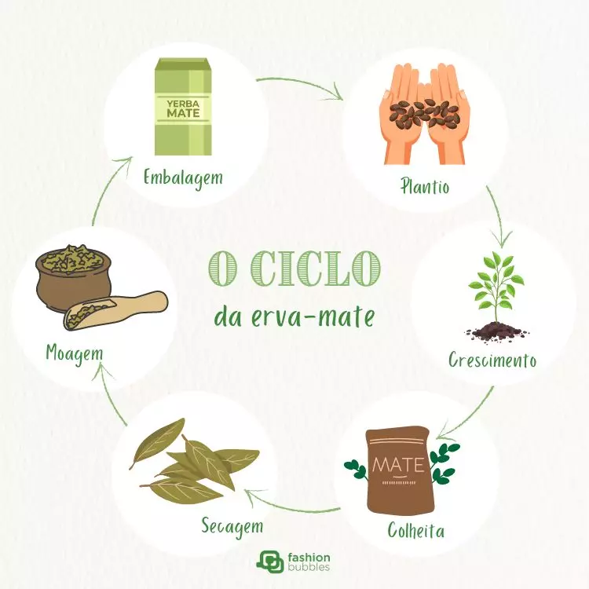
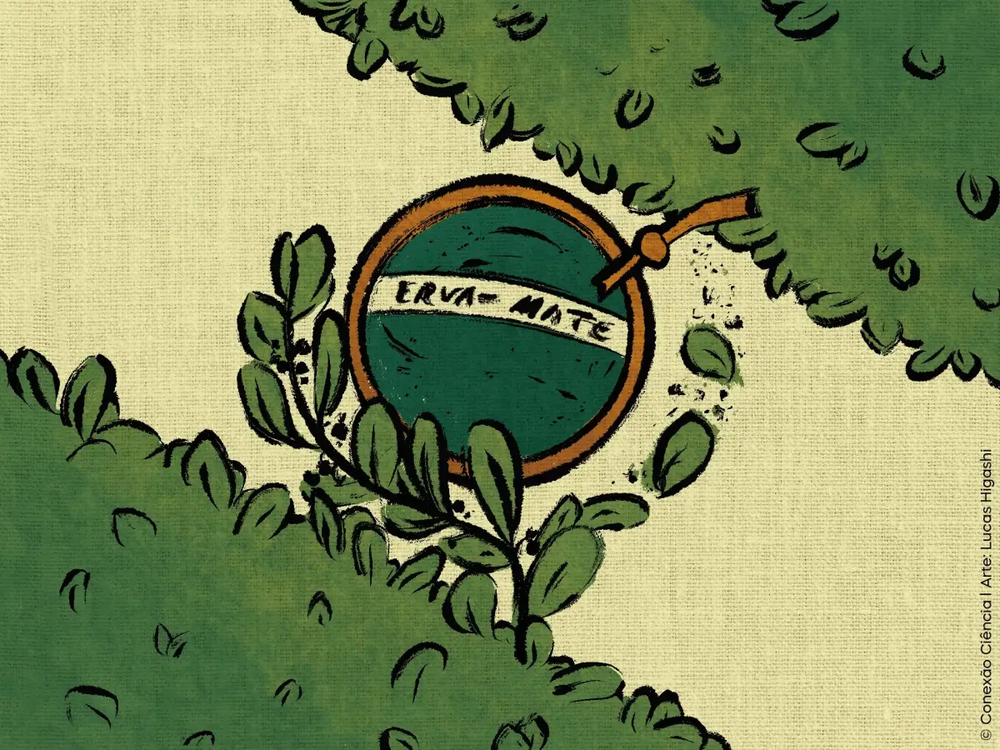

A Erva-Mate e o Paraná
A erva-mate é uma planta nativa da região Sul da América do Sul e possui grande importância para a história do Paraná. Antes da chegada dos europeus, povos indígenas, especialmente os Guarani, já utilizavam a planta e conheciam formas de preparar e consumir a bebida.
Com o passar do tempo, a erva-mate passou de um produto utilizado principalmente para consumo local para uma importante mercadoria. Durante o século XIX, sua produção, beneficiamento e comercialização cresceram muito, fazendo com que ela se tornasse um dos principais produtos da economia paranaense.

Como começou o uso da erva-mate?
O uso da erva-mate começou entre os povos indígenas que habitavam a região Sul da América do Sul. Os Guarani possuíam conhecimentos sobre a planta e utilizavam suas folhas para preparar uma bebida. Esse hábito posteriormente foi adotado por outros grupos e se espalhou pela região.
No Paraná, a erva-mate era encontrada em grande quantidade em diferentes regiões. A partir do século XIX, sua exploração e comercialização cresceram, transformando a planta em uma das principais riquezas do estado.

A importância econômica da erva-mate
Durante o século XIX, a erva-mate se tornou um dos principais produtos de exportação do Paraná. Sua produção envolvia diversas etapas, como a extração das folhas, o transporte, o beneficiamento nos engenhos e a comercialização.
A atividade ervateira também gerou empregos e movimentou o comércio. A erva-mate era transportada para diferentes regiões e chegava aos portos do litoral paranaense, principalmente Paranaguá, de onde seguia para outros mercados.

O Ciclo da Erva-Mate
O Ciclo da Erva-Mate foi um período de grande importância para a economia paranaense, principalmente durante o século XIX. A atividade ervateira envolvia trabalhadores, produtores, comerciantes, transportadores e proprietários de engenhos.
Depois da coleta, as folhas da erva-mate passavam por processos como o sapeco e a secagem. Em seguida, eram beneficiadas e preparadas para serem comercializadas. O produto era transportado por caminhos, carroças, tropas de animais e posteriormente por ferrovias.
Linha do tempo
Antes da colonização: povos indígenas, especialmente os Guarani, já utilizavam a erva-mate.
Século XVIII: a exploração e o consumo da erva-mate se expandiram pela região.
Século XIX: a produção e a exportação cresceram, fazendo da erva-mate um dos principais produtos da economia do Paraná.
Final do século XIX: engenhos, comércio e meios de transporte ligados à erva-mate se desenvolveram.
Início do século XX: a importância econômica do produto diminuiu em relação ao período anterior, mas a erva-mate continuou presente na economia e na cultura paranaense.
Como a erva-mate ajudou no crescimento das cidades?
A atividade ervateira contribuiu para o crescimento de várias cidades do Paraná. O comércio e o beneficiamento da erva-mate estimularam a criação de empregos, engenhos, estabelecimentos comerciais e melhorias nos caminhos utilizados para transportar o produto.
Curitiba teve importância como centro comercial, enquanto cidades do litoral, como Morretes, Antonina e Paranaguá, participaram do transporte e da exportação. São Mateus do Sul também desenvolveu uma forte relação com a produção de erva-mate.
A importância cultural da erva-mate
Além de sua importância econômica, a erva-mate faz parte da identidade cultural do Paraná. O costume de preparar e compartilhar o chimarrão está relacionado à convivência, à hospitalidade e à transmissão de tradições entre diferentes gerações.
A erva-mate também está presente nas artes e em símbolos do estado. Um ramo de erva-mate aparece na bandeira do Paraná, mostrando a importância da planta para a identidade paranaense.
Curiosidades
Curiosidade 1
A erva-mate já era utilizada pelos povos indígenas muito antes da chegada dos colonizadores europeus.
Curiosidade 2
Um ramo de erva-mate aparece na bandeira do Paraná, representando a importância da planta para o estado.
Curiosidade 3
O transporte da erva-mate ajudou a estimular a construção e melhoria de caminhos e ferrovias no Paraná.
Curiosidade 4
São Mateus do Sul é uma das regiões paranaenses tradicionalmente ligadas à produção de erva-mate.
Referências
Patrimônio Cultural do Paraná — informações sobre a história paranaense e a erva-mate.
Arquivo Público do Paraná — documentos e materiais históricos sobre a erva-mate no Paraná.
Museu Paranaense — materiais históricos e culturais relacionados à erva-mate.
Instituto de Desenvolvimento Rural do Paraná — informações sobre a produção de erva-mate no estado.